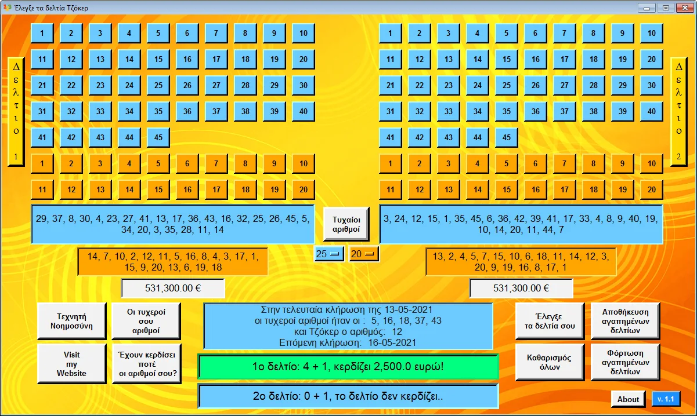

Η πιο πλήρης εφαρμογή για το Τζόκερ

Το πρόγραμμα για το Τζόκερ αναβαθμίστηκε στην εκδοση 1.3. Αναλυτικά τα χαρακτηριστικά του προγράμματος:
Μπορείς να:
- Αποθηκεύσεις τα δελτία σου και να τα ελέγχεις με ένα κλικ.
- Πραγματοποιείς τυχαίες κληρώσεις με όσους αριθμούς και Τζόκερ επιθυμείς.
- Βλέπεις το κόστος των δελτίων που φτιάχνεις.
Επίσης έχεις:
- Άμεσα τα αποτελέσματα της κλήρωσης του τζόκερ στην κεντρική σελίδα.
- Πλήρη πρόσβαση στο ιστορικό κληρώσεων, όπου βλέπεις αν τα δελτία σου έχουν κερδίσει οποτεδήποτε στο παρελθόν. Το ιστορικό κληρώσεων ανανεώνεται μετά απο κάθε κλήρωση.
- Δυνατότητα εικονικών κληρώσεων στο ιστορικό, με όσους αριθμούς και Τζόκερ επιθυμείς.

- Προσωποποιημένους τυχερούς αριθμούς με βάση το ονοματεπώνυμο και την ημερομηνία γέννησης σου.
- Πλήθος στατιστικών στοιχείων απλά και κατανοητά παρουσιασμένα.
- Δυνατότητα εκτύπωσης ολόκληρου του ιστορικού κληρώσεων
Σχεδιάζεται να προστεθούν σε επόμενες εκδόσεις:
- Πρόβλεψη μελλοντικών αριθμών με την δύναμη της Τεχνητής Νοημοσύνης.
Μπορείτε να κατεβάσετε ελεύθερα το πρόγραμμα για:
Windows 32-bit εδώ.
Windows 64-bit εδώ.
Προτείνεται η απεγκατάσταση της παλιάς έκδοσης πριν την εγκατάσταση της νέας. Η εκδοση 1.2 θα σταματησει σταδιακα να ενημερωνεται με τις νέες κληρώσεις.
Added to Version 1.3
* Οι αριθμοί στις μπάρες είναι πλέον σορταρισμένοι σε αύξουσα σειρά.
* Διόρθωση του παραθύρου "Οι τυχεροί μου αριθμοί".
* Ενημέρωση κληρώσεων μέσω Github.
* Διόρθωση γνωστών σφαλμάτων.
Added to Version 1.2
* Προστέθηκε πλήθος στατιστικών στοιχείων.
* Προστέθηκε δυνατότητα εκτύπωσης όλου του ιστορικού σε txt αρχείο.
* Διόρθωση γνωστών σφαλμάτων.
Ελεύθερο για προσωπική χρήση, απαγορεύεται αυστηρά οποιαδήποτε εμπορική εκμετάλλευση.